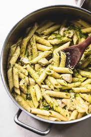

Home
Chicken Pesto

Ingredients
- 2 tablespoons olive oil
- 2 cloves garlic
- 4 skinless, bonelss, thighs
- 2 cups fresh spinish leaves
- 1 jar of raos homemade Alfredo dauce
- 2 tablespoons, organic, pesto
- 1 (8oz) package dry penne pasta
- 1 tablespoon grated Romano cheese
Directons
- Heat oil in a large skillet over medium high heat. Add garlic, saute for 1 minute; then add chicken and cook for 7 to 8 minutes on each side.
When chicken is close to being cooked through (no longer pink inside), add spinach and saute all together for 3 to 4 minutes.
- Meanwhile, prepare Alfredo sauce according to package directions. When finished, stir in 2 tablespoons pesto; set aside.
- In a large pot of salted boiling water, cook pasta for 8 to 10 minutes or until al dente. Rinse under cold water and drain.
- Add chicken/spinach mixture to pasta, then stir in pesto/Alfredo sauce. Mix well, top with cheese and serve.